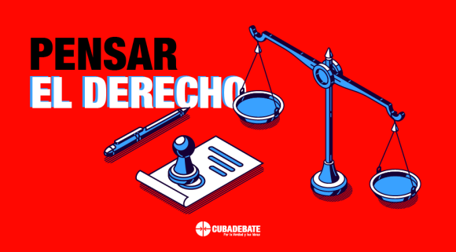

El adulto mayor y los cuidados en Cuba: Un acercamiento desde el Derecho (II)
La protección de la persona adulta mayor por las instituciones del Estado y las familias, resulta siempre de mucho debate y opiniones encontradas, teniendo en cuenta lo altamente sensible del tema. Cuando se piensa en este grupo generacional, por lo general, se hace desde la sensibilidad y el amor a partir de todo lo que representan en la sociedad.
En la columna anterior estuvimos realizando un primer acercamiento al tema y brindando algunos datos a partir de la información pública accesible, lo que nos permitió tener idea del aumento de las personas de más de 60 años en Cuba. Cuando analizamos esto, no solo como logro de la humanidad al llegar a una edad avanzada, sino también como reto por todo lo que implica, se hace necesario una mirada desde el Derecho y como este en su función de transformar, contribuir al cambio social, tiene también la misión de servir de garantía al disfrute de los Derechos en esta edad.
Llegar a la vejez no es algo creado por el Derecho o que este pueda impedir, pero sí tiene la misión de hacer que a través de las Normas Jurídicas y su correcta aplicación, pueda tenerse un estilo de vida mucho más seguro y placentero al llegar a la llamada Tercera Edad.
¿Protege la Constitución a las persona adulta mayor en Cuba?
Llevar un derecho a la Constitución de la República significa su obligada observancia y cumplimiento no solo por los órganos del Estado, sus directivos, funcionarios y empleados, sino también por toda la sociedad, cumpliendo además con el principio de que toda la Legislación que se vaya creando, aplicando y entrando en vigor, tiene que estar en total correspondencia con la Carta Magna y servir como garantía efectiva al cumplimiento del Derecho.
En este sentido, Cuba en su Texto Supremo recoge en el artículo 88 el derecho de la Persona Adulta Mayor a su protección: El Estado, la sociedad y las familias, en lo que a cada uno corresponde, tienen la obligación de proteger, asistir y facilitar las condiciones para satisfacer las necesidades y elevar la calidad de vida de las personas adultas mayores. De igual forma, respetar su autodeterminación, garantizar el ejercicio pleno de sus derechos y promover su integración y participación social.
Si bien en la primera entrada de este trabajo habíamos afirmado que Cuba, en cuanto a Derecho no tiene recogido de forma directa los Cuidados, del artículo anterior puede deducirse su inclusión y no abandono al asumir labores de protección, asistencia y facilidad para satisfacer sus necesidades, todo esto no solo por el Estado sino también por los familiares obligados a ello o a partir de Instituciones de Guarda y Protección incorporadas en el Código de la Familias, tal es el caso de la Guarda de Hecho o el Acogimiento Familiar.
¿Se queda sólo en el artículo 88 lo referido a la protección de la persona adulta mayor?
Aunque muchas veces pensamos solo en este artículo, hay que dejar claro que a lo largo de todo el cuerpo constitucional encontramos otros que nos permiten también llevar a efecto esta protección y cuidados.
Ya desde el propio Artículo 1, donde se declara que rige el principio y anhelo martiano de “Con todos y para el bien de todos”, se deja claro que el tener determinada edad donde se considera a la persona “viejo o vieja”, no significa que se es inservible, dependiente para todas las actividades o inútil ante cualquier manifestación de participación en sociedad. Por tanto, no estamos hablando de una sociedad para algunos y el bien de unos pocos, sino que cada uno de sus miembros, más allá de la edad y según su capacidad, pueda aportar a ella. En el propio artículo se hace referencia al bienestar, término este que si bien se tiende a asociar solo a los bienes materiales, desde lo jurídico también implica plena confianza en el cumplimiento de lo regulado como garantía al disfrute pleno de los Derechos y respeto a ellos.
Bajo este análisis no podemos dejar de mencionar lo referido en el artículo 13, incisos d y f al hacer énfasis en que dentro de los fines esenciales del Estado se encuentra el logro de la igualdad efectiva en el disfrute y ejercicio de los derechos, así como garantizar la dignidad plena de las personas y su desarrollo integral. Dignidad que aparece regulada con mayor amplitud en el artículo 40 estableciéndola como el valor supremo que sustenta el reconocimiento y ejercicio de los derechos y deberes consagrados en la Constitución, los tratados y las leyes.
En cuanto a las posibles causas de discriminación, la propia Constitución establece que la edad no podrá ser vista como criterio de exclusión siempre que las condiciones de la persona le permita seguir formando parte activa en el propio desarrollo de la sociedad, así como en la participación de actividades cotidianas.
A lo anterior se incorpora lo relacionado a otros Derechos contenidos también en la Constitución de la República, entre los que pueden mencionarse el derecho a la vida, la integridad física y moral, la libertad, la justicia, la seguridad, la paz, la salud, la educación, la cultura, la recreación, el deporte y a su desarrollo integral, al libre desarrollo de su personalidad, guardar entre sí una conducta de respeto, fraternidad y solidaridad, el respeto a su intimidad personal y familiar, su propia imagen y voz, su honor e identidad personal, así como todo el catálogo de Derechos que no dejan de tenerse por el solo hecho de arribar a los 60 años o más.
Persona adulta mayor, cuidados y Código de las Familias
Uno de los grandes hitos del Derecho cubano en los últimos años fue sin dudas la aprobación del actual Código de las Familias. Un texto moderno, para nada adelantado a su época, sino contextualizado a las realidades del país, emancipador por cuanto viene a reconocer derechos a grupos que tradicionalmente venían ganado en reconocimiento pero con marcada ausencia de garantías efectivas para el desarrollo de temas tan urgentes como la Igualdad y participación plenas. En él, lo relacionado al tema de la persona adulta mayor no se enmarca en un grupo de artículos, más bien aparece desarrollado a través de todo el cuerpo normativo, lo que evidencia la importancia que se le da al mismo.
En el texto, el artículo 421 establece que: “Las personas adultas mayores tienen derecho a una vida familiar digna, siendo la familia la principal responsable de la atención a sus necesidades tanto en el orden afectivo como patrimonial; asimismo, debe respetarse su intimidad, la comunicación y los vínculos con el resto de los integrantes de su familia.
Incluye además que: “Las familias, la sociedad y el Estado deben reconocer y respetar la autodeterminación de la persona adulta mayor, su derecho a tomar decisiones, a definir y desarrollar su proyecto de vida de forma autónoma e independiente de acuerdo con sus convicciones, en igualdad de condiciones y a disponer de mecanismos que les permita ejercer sus derechos”.
¿Adelantada o valiente esta regulación del Código de las Familias?
Ni una, ni otra. Necesaria. Sí, pues ya habíamos dicho que ser una Persona Adulta Mayor no es sinónimo de inservible o un elemento de molestia, por tanto, la autonomía es imprescindible siempre que le permita tomar decisiones por él mismo y no a través del criterio de otra persona. De esto se presume, aunque no nos llegue a gustar del todo en ocasiones, que la propia persona decida si quiere o no ser cuidada.
Cuando elige ser cuidada por otra persona o las circunstancias conducen a ello, ya sea a través de una institución del Estado, los llamados cuidadores familiares u otras Instituciones (maneras, formas) establecidas en el Código de las Familias, hay cuestiones que no podemos pasar por alto. Entre ellas la ya mencionada autonomía, las voluntades, los deseos, las preferencias y la dignidad de la persona a quien se cuida.
El propio Código de las Familias establece que deben impedirse todas las formas de abuso, explotación, discriminación y violencia en cualesquiera de sus manifestaciones contra la persona que está siendo cuidada. Agrega que “el Estado debe garantizar institucionalmente los procesos de capacitación necesarios para dotar a la persona cuidadora familiar de las competencias específicas que le permitan realizar su actividad de forma óptima e integral, ser capaz de prevenir acciones o prácticas que puedan producir daños o agravar las condiciones existentes.” Lo anterior puede asumirse también en otras formas de Cuidados.
Incorpora además que en la medida que sus potencialidades físicas y psíquicas se lo permitan, están en el deber de cuidar de sí mismas y de su familia.
¿Existen deberes de las familias con las personas adultas mayores en el tema de los cuidados?
Si bien erróneamente se cree que solo el Estado como institución es quien tiene a su cargo lo relacionado con la persona adulta mayor, ya habíamos dicho que la familia es la principal responsable de la atención a sus necesidades. De ahí que la Norma Familiar disponga en su artículo 430 que “las hijas e hijos y demás familiares tienen el deber de contribuir a la satisfacción de las necesidades afectivas y de cuidado, y al sostenimiento de las personas adultas mayores, aunque no residan juntas, así como a preservar sus bienes.”
En el caso que la persona adulta mayor se encuentre internada en un centro de asistencia social, continúa siendo deber de los familiares mantener el vínculo de este con el hogar familiar, el contacto permanente con la institución, acudir cada vez que se le convoque, acompañarle en los ingresos hospitalarios siempre que no existan circunstancias que se lo impidan y cualquier otra acción que redunde en su bienestar general.
A modo de cierre
Sin creer que hemos agotado el tema y del cual seguiremos hablando en otras columnas, concluimos que la protección efectiva de las personas adultas mayores, incluido lo relacionado a los cuidados, comprende su pleno desarrollo y la satisfacción de sus necesidades afectivas y patrimoniales, así como los aspectos físicos, psicológicos, sociales y jurídicos de su vida, sobre la base de valores como el afecto, el respeto a sus voluntades, deseos y preferencias, la consideración, la inclusión, la solidaridad y la conservación de su salud psíquica y física, de acuerdo con los principios de proporcionalidad, subsidiariedad y respeto a su autonomía, establecido todo esto en el artículo 431 del Código de las Familias.
Asimismo, deja claro que deben respetarse los actos que haya otorgado la persona en previsión de su protección futura ante la eventual pérdida de aptitudes asociadas a la edad.
El grave problema q tenemos no es la ausencia de leyes el problema q tenemos es q los q tienen q hacer cumplir las leyes no la aplican o no la aplican en tiempo y forma así no se puede.
Como piensan proteger al adulto mayor, ya jubilado, que recibe una pension miserable que resuelve bien poco?
Totalmente de acuerdo, todo dicho,
Para comenzar,si un adulto mayor,después de trabajar toda su vida,percibe una pensión de miseria.De que seguridad para la vejez estamos hablando si con eso no puede pagar los alimentos que necesita,mucho menos los medicamentos que a esas edades son necesarios ,eso hablando solo de temas vitales.En Cuba los ancianos no están protegidos,al contrario tienen que luchar solos por sobrevivir cada día.
Buenas tardes, por favor disculpen la molestia, soy una adulta mayor, con discapacidad, hipertensa, diabética, con una cardiopatía, y no veo la protección a mujeres, adultos mayores o discapacitados, al menos en mi caso, tengo en mi poder y estudiada la Constitución de la República, la nueva ley de Atención a la población, todo está maravillo, si se cumpliera, pero en mi caso particular, nadie desde el Consejo de Estado, ANPP, Asamblea Provincial de la Habana, Municipal de 10 de Octubre, presidenta de Consejo Popular y delegada, hace más de 2 años qué escribo, por ilegalidades en la azotea de mi edificio de casi 70 años, qué traen consigo otros problemas, y hasta el momento ni una sola llamada, sólo el Consejo de Estado me informa qué lo pasó a la Asamblea Provincial, sólo éso, y allí está, conozco hasta un registro de entrada del año anterior, RE.3113/2024, repito espero una respuesta qué no lleva recursos, sólo dos preguntas, porque sé de la seriedad de Cubadebate. Las instancias del Poder Popular a los diferentes niveles, están exentas de cumplir con la Constitución de la República y las leyes, qué se aprueban en la Asamblea Nacional del Poder Popular?????, por favor necesito saber, Quién vela por la protección a los adultos mayores, discapacitados y con enfermedades no transmisibles???, Necesito saber, para continuar escribiendo, porqué yo sí creo en la Constitución y las leyes en mi país. Por favor, necesito información urgente. Muchas gracias. Dios los bendice siempre.
La mejor forma de garantizar un estilo de vida saludable y placentero al adulto mayor es que éste arribe a la ancianidad después de transitar positivamente por la juventud y la madurez: Con vivencias positivas y tranquilidad espiritual, bien alimentado y con un entorno material y social donde él se sienta a gusto.
Todo muy bonito , 2 adultos de más de 70 años , ambos graduados universitarios con 82 años de labor entre ambos en instituciones del estado , jubilación sumada de ambos 4030.00 CUP , letra muerta ....
Están preparadas las instituciones para implementar el cuidado del adulto mayor y los cuidadores, como estrategia para desarrollar la economía plateada, como se hace en otros países.? Me parece que no..
En blanco y negto muy bonito pero en la realidad con penciones como la mia de 1578 cup despues de ser lic.y haber trabajado 30 años ...... ni ir a un teatro se.puede con esa misera pencion es mas ni alimentsrse y no se hace nada visible solo.papeles y todos sabemos oara q sirve un.papel
Creo que el tema leyes no es lo que necesitamos sino que las mismas se cumplan, y en la parte que corresponde al estado si un anciano necesita ir al cajero múltiples veces a cobrar su pensión, si un anciano de más de 80 años tiene que ir al dr de la familia igualmente muchas veces porque no hay dr, porque no hay electricidad, etc realidades que tenemos ahora, entonces dónde esta el apoyo al adulto mayor, y estoy hablando de ancianos de más de 80 años, creo que el tema es para nunca agotarse, porque la realidad es otra muy diferente a lo que pretendemos tener como país, por otro lado tenemos que ver qué Cuba no es la Habana y a veces el enfoque de muchas cosas se ve desde la capital. Gracias
Soy una adulta mayor revolucionaria y fidelidad ante todo, trabaje por más de 48 años e hice una carrera de nivel superior de la que me enorgullezco pero no representa interés alguno ante la cuantía salarial luego de jubilarme. Trabajé hasta los 60 años y continúe recontrarada por 6 años más y aún así me jubilaron hace 2 años con 2600 pesos, triste, tener que sobrevivir con un salario así, y aún tengo vecinas con menos dinero de jubilación. Leyes protectoras existen pero de que valen, están solo en el oapel. Miren, los viejos como yo, no tienen asegurado quien les busque sus medicamentos a la farmacia, se habla de mensajeros pero eso no funciona como debe ser, no se les garantiza a ese sector de la población aunque sea un polvo de batido para su desayuno o algo así, tienen que hacer largas colas para cobrar, no dominan o no tienen capacidad para el uso cajeros, se les maltrata y badue interviene, lo mismo en el agro que en cualquier parte. Yo soy vieja pero me duele ver otros viejitos peores que yo.
No hay protección ninguna a los ancianos, puede que sea política del Estado, pero gasta ahi, a nadie les importamos. No es Bliqueo, es falta de gestión e interés.
Qué derechos tienen nuestros adultos mayores? Es responsabilidad de la familia garantizar alimentos y medicinas porque después de trabajar por más de 50 años muchos de ellos la jubilación que perciben no alcanza ni siquiera para una bolsa de leche en polvo ( 8.75 mlc el kg si aparece o más de 2000 cup). Los medicamentos para tratar enfermedades crónicas que por tanto tiempo se garantizaron con un Tarjeton ya no hay forma de conseguirlos a no ser a precios impagables en el mercado negro. Es solo un pequeño ejemplo de desprotección porque la lista es inmensa. Dejemos a un lado las leyes y hagamos cosas reales para que puedan tener una vejez digna.